Aprende
Un lugar para cada persona que llega
- Del primer hola a la entrega.
- Para ventas y F&I; gerencia lo mira.
- ¿Primera vez? Sigue este capítulo en orden: dónde está, tu primer cliente y los cinco hábitos. ¿Ya la usas? Ve directo a lo que quieres hacer o a la consulta.
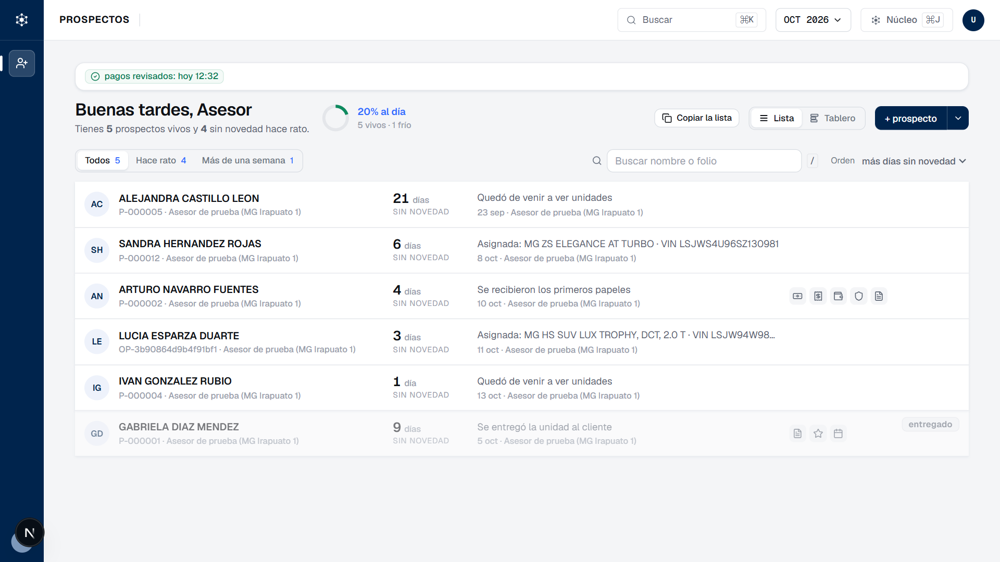
Aprende · 1.1
Dónde está: nucleoadc.ai/prospectos
- En el menú del Hub.
- Se instala en el teléfono.
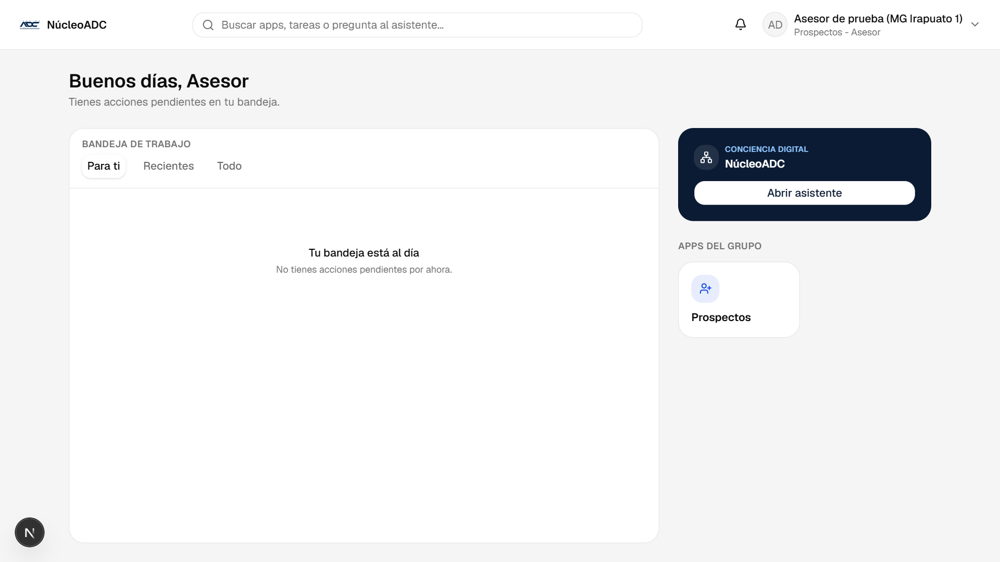
El menú del Hub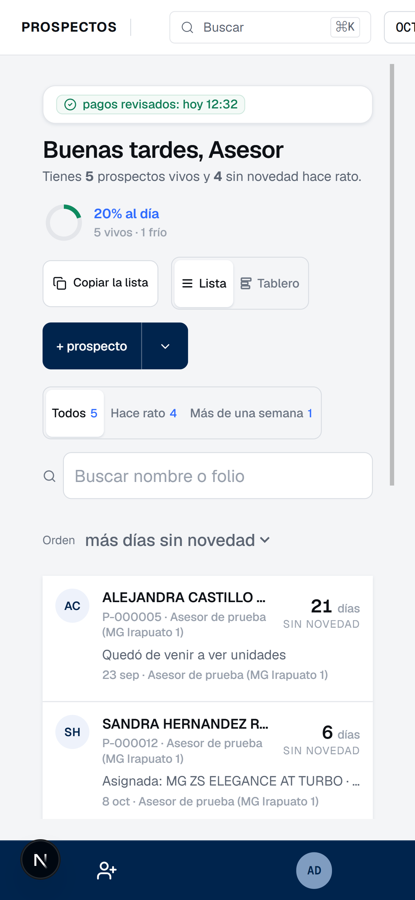
En el teléfonoAprende · 1.2
Tu primer cliente, de que llega a que se lleva su auto
- Así va una venta. No es una fila: cada asunto se abre cuando pasa, en el orden en que pase.
- En la ficha, «Lo que sigue» dice qué toca ahora (2.3).
- Llega: dalo de alta al momento, con su entrevista (2.2). Si ya vino antes, la app te lo dice; si tiene lead en SaleU, lígalo ahí mismo (2.8).
- Te da su identificación: súmala a su Expediente; sin ella no se entrega (2.7).
- Escoge su auto: asígnale la unidad en cuanto se sepa cuál (2.6). Con ella, la app encuentra su factura.
- Trae sus papeles: súbelos en Recepción de Documentos, que se cierra sola cuando están todos (2.7, paso 7).
- Si financia: F&I lleva la Solicitud de Crédito, el Contrato de Crédito y el Desembolso (3.1).
- Paga y se factura: Pago y Factura se mueven solos con lo que registra finanzas; tú solo anotas lo que no se ve, como el apartado (3.3).
- Si lleva seguro: ábrele Seguro con «+ Asunto» (2.5); puede seguir después de entregar.
- En cada llamada, cita o trámite: anótalo en su asunto, y termínalo cuando quede resuelto (2.4).
- Se lo lleva: cierra Entrega. Sale de tus vivos y nacen solas la Encuesta de satisfacción y la 1ª cita de servicio (2.10).
Aprende · 1.3
Cinco hábitos
- Cuando los haces sin pensarlo, ya estás listo para trabajar con la app. Cada uno lleva a su tarea.
Cómo hago
Qué quieres hacer
- Una sección por tarea: qué es, sus pasos y la captura de cada paso. ¿Primera vez? Empieza por tu primer cliente.
- En cada tarea, Ten a la mano dice qué preparar. En cada paso, Qué pasa después dice cómo sabes que quedó, Ojo lo que se te puede pasar y Automático lo que la app hace sola.
Cómo hago · 2.1
Entrar y qué ves
- Al entrar, la app dice cuántos prospectos vivos llevas y cuántos llevan rato sin novedad.
- La lista pone arriba al que lleva más días sin novedad: por ahí se empieza el día.
- Cuatro pasos: saludo y anillo · la lista · filtrar y buscar · lista o tablero.
- Ten a la mano: tu usuario del Hub. Si no ves Prospectos en el menú, pide el permiso a Sistemas.
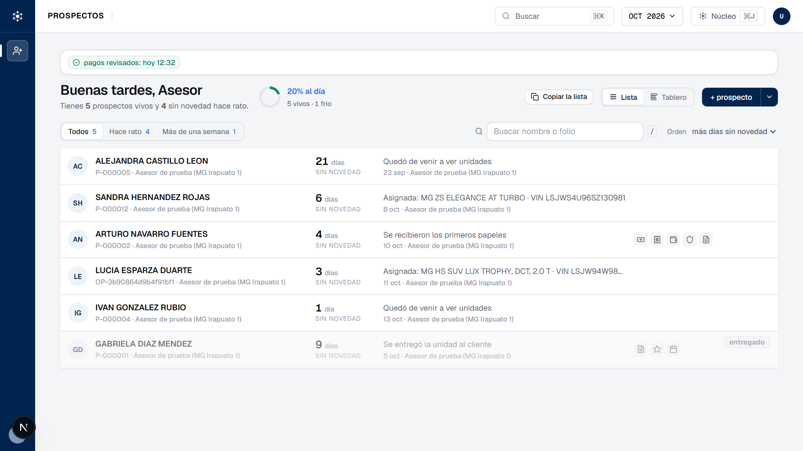
Cómo hago · 2.1 Entrar y qué ves · Paso 1 de 4
El saludo dice cuántos vivos llevas; el anillo, qué parte está al día
- Fíjate en: «sin novedad hace rato» cuenta los que llevan días sin moverse; el anillo da el porcentaje «al día». «Frío» es el que lleva 7 días o más sin novedad.
- Automático: nada que tocar: es la foto del día, y cambia sola conforme anotas.
Cómo hago · 2.1 Entrar y qué ves · Paso 2 de 4
La lista: arriba el que lleva más días sin novedad
- Cada renglón: quién es, su folio y su asesor, los días sin novedad y lo último que pasó.
- Qué pasa después: tocar un renglón abre su ficha (2.3). «Orden» cambia el acomodo.
- Ojo: Los entregados van al final, atenuados y con su sello «entregado» (2.10).
Cómo hago · 2.1 Entrar y qué ves · Paso 3 de 4
Filtra por «Hace rato» o «Más de una semana», o busca por nombre o folio
- Qué pasa después: la lista se queda solo con los que cumplen; «Todos» la devuelve entera.
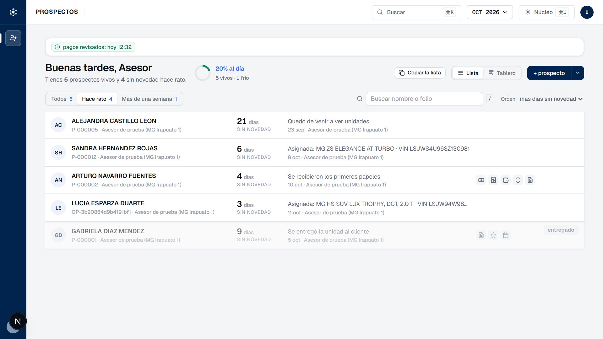
FiltrosFiltro «Hace rato»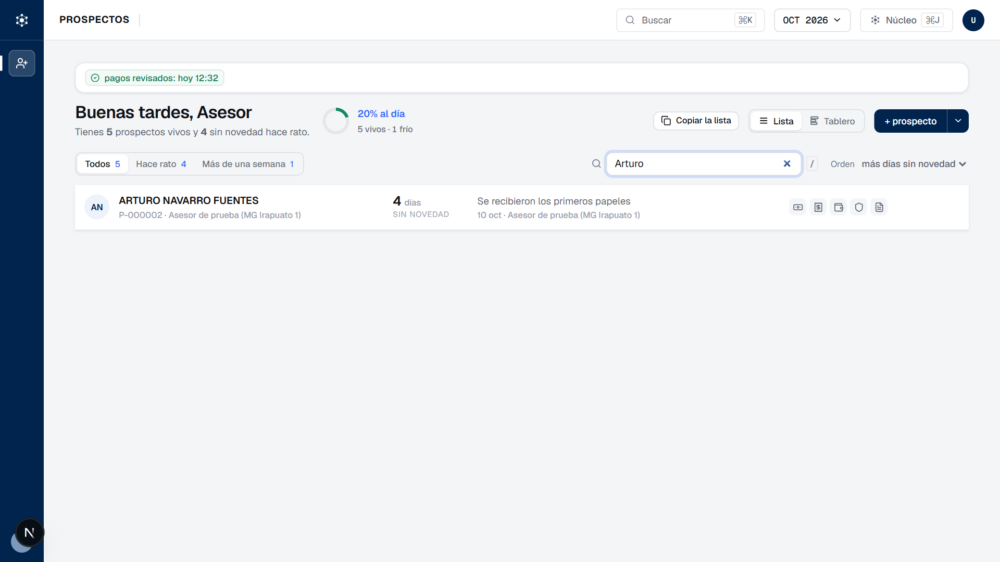
BuscarBúsquedaCómo hago · 2.1 Entrar y qué ves · Paso 4 de 4
Lista o tablero: la misma gente, acomodada por asunto
- Qué pasa después: en el tablero cada columna es un asunto; una tarjeta se arrastra para abrirle otro asunto (2.11).
- Copiar la lista (o el tablero) la deja lista para pegarla en un mensaje.
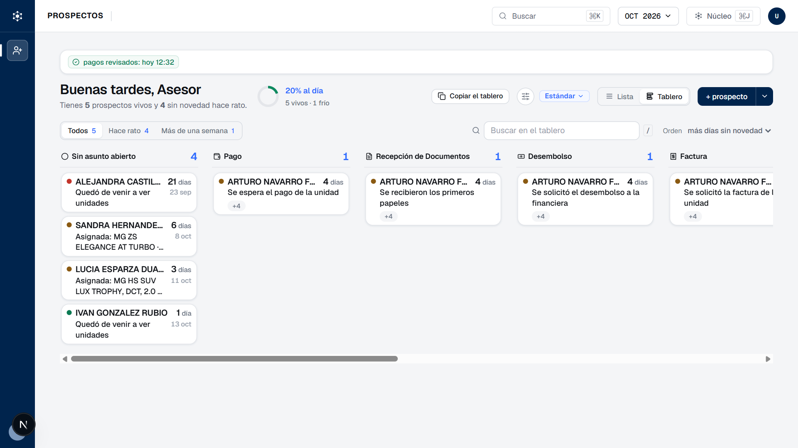
Lista · TableroCopiarCómo hago · 2.2
Dar de alta a un prospecto
- Cada persona que llega se registra al momento, en dos pasos: quién es y la entrevista.
- Si ya vino antes, la app pregunta si es la misma persona (por su teléfono o su correo) para no registrarla dos veces.
- Cinco pasos: abrir · quién es · ¿es la misma persona? · la entrevista · crear.
- Ten a la mano: su nombre completo, su teléfono y su correo, y unos minutos para la entrevista: cuatro preguntas, nueve si financia.
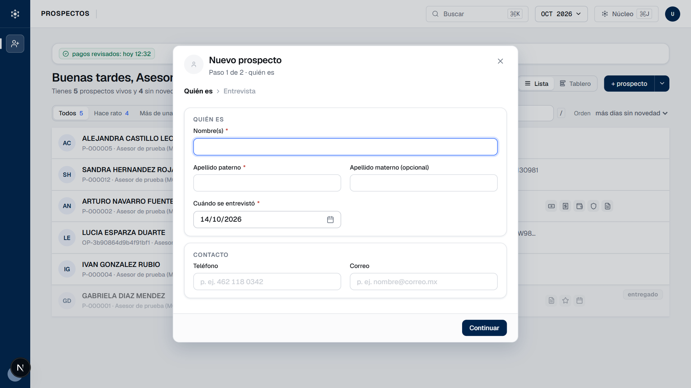
Cómo hago · 2.2 Dar de alta · Paso 1 de 5
Toca «+ prospecto» en la lista
- Qué pasa después: se abre la ventana «Nuevo prospecto», en su paso «Quién es»; la lista se queda atrás.
Cómo hago · 2.2 Dar de alta · Paso 2 de 5
Quién es: el nombre en tres partes, cuándo se entrevistó, teléfono y correo
- Qué pasa después: al escribir el teléfono o el correo, la app busca si ya existe (paso 3); «Continuar» pasa a la entrevista.
- Ojo: Si llevas más de una sucursal, también eliges en cuál nace el prospecto.
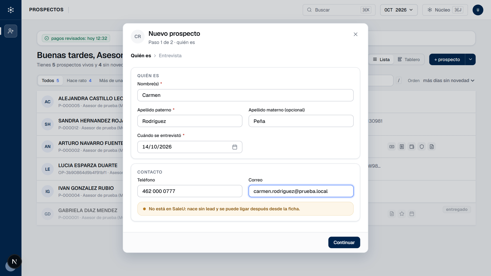
Nombre en tres partesCuándo se entrevistóTeléfono y correoContinuarCómo hago · 2.2 Dar de alta · Paso 3 de 5
¿Es la misma persona? Si el teléfono o el correo ya son de alguien, la app lo dice
- Qué pasa después: «Ver su ficha» lleva al prospecto que ya existe; «Es otra persona» sigue con el alta.
- Si lo lleva otro asesor, «Sí, es la misma persona» avisa: no se registra dos veces y el gerente decide con quién se queda.
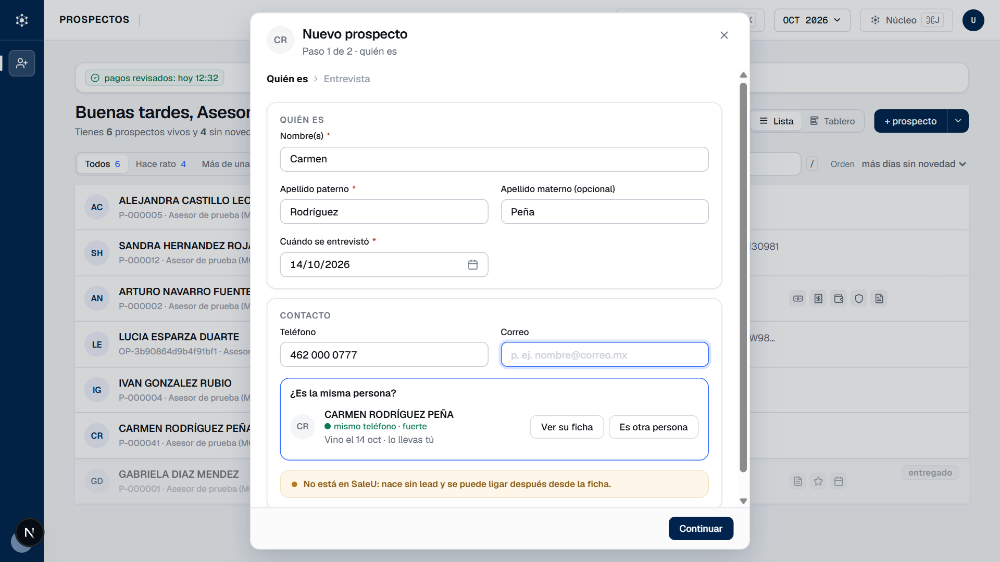
¿Es la misma persona?Cómo hago · 2.2 Dar de alta · Paso 4 de 5
La entrevista: cuatro preguntas para todos; si financia, cinco más
- Fíjate en: Las cuatro de siempre: cómo nos conoció, nuevo o seminuevo, cómo paga y si trae auto a cuenta. Con financiamiento salen cinco más: edad, enganche, mensualidad, a qué se dedica y cómo comprueba ingresos.
- Automático: el borrador se guarda solo durante 24 horas: si cierras, al volver sigues donde ibas.
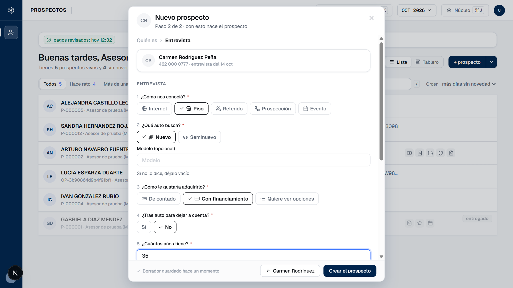
PreguntasPreguntas 1 a 5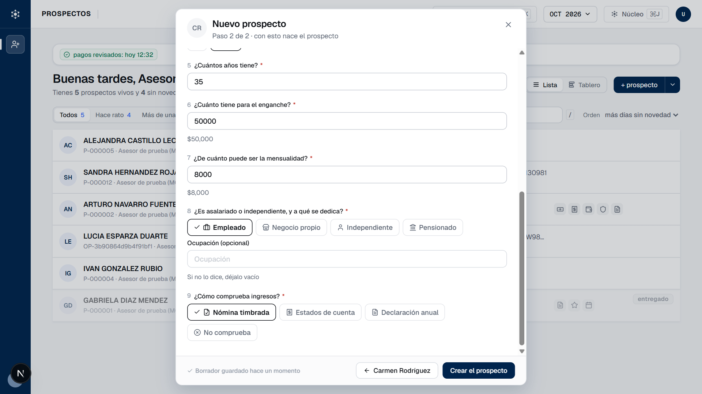
Crear el prospectoBorradorPreguntas 6 a 9Cómo hago · 2.2 Dar de alta · Paso 5 de 5
«Crear el prospecto»: nace con su folio y se abre su ficha
- Qué pasa después: ya está en la lista, con «se movió hoy». Lo que sigue es sumar su identificación en el Expediente (2.7): sin ella no se entrega.
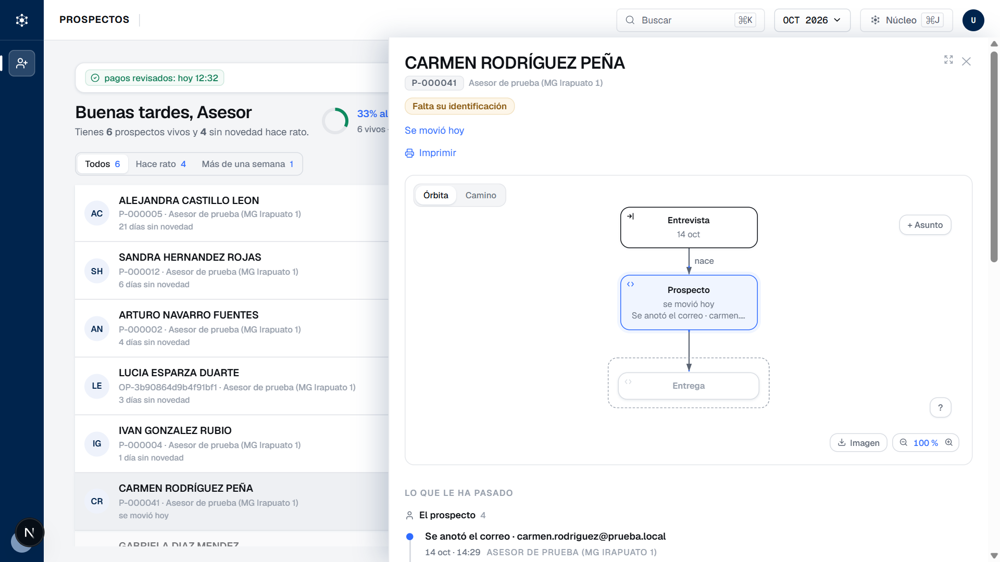
Su ficha, con folioYa está en la listaCómo hago · 2.3
Abrir la ficha y leerla
- La ficha reúne todo lo de un prospecto: quién es, en qué va y qué le ha pasado.
- Se abre desde la lista y se lee de arriba abajo; en esta sección solo se mira, no se escribe nada.
- Cinco pasos: abrirla · Camino y Órbita · «Lo que sigue» · «Lo que le ha pasado» · pantalla completa y chip.
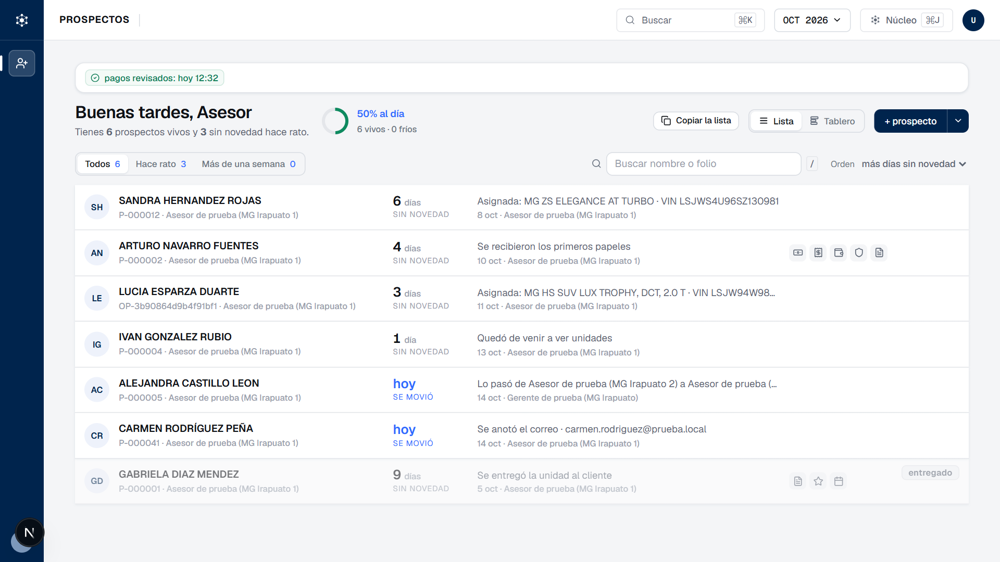
Cómo hago · 2.3 Abrir la ficha y leerla · Paso 1 de 5
Toca el renglón del prospecto en la lista
- Fíjate en: Arriba de la ficha van su nombre, su folio, quién lo lleva, el chip de la identificación y los días sin novedad.
- Qué pasa después: La ficha se abre como un cajón sobre la lista, que sigue a la izquierda con su renglón marcado. Tocar otro renglón cambia de prospecto; la ✕ o Esc la cierran.
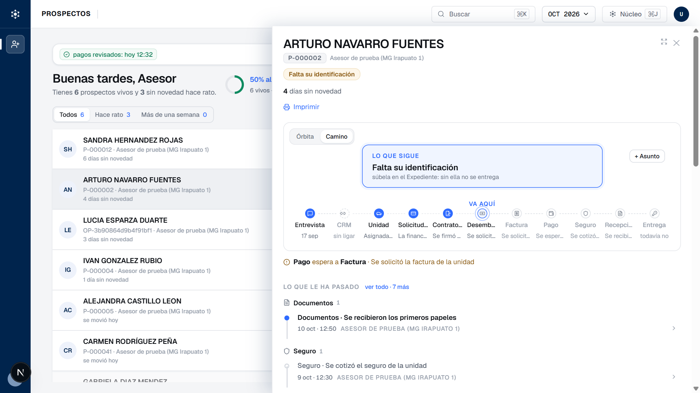
La ficha, como cajónSigue en la listaDespuésCómo hago · 2.3 Abrir la ficha y leerla · Paso 2 de 5
«Órbita» o «Camino»: dos formas de ver los asuntos
- Fíjate en: Camino los pone en fila, de la Entrevista a la Entrega, y «va aquí» marca por dónde va. Órbita pone al prospecto al centro y sus asuntos alrededor.
- Qué pasa después: Los asuntos son los mismos, con otra forma: en las dos, tocar uno abre su panel. La app recuerda la forma que dejaste.
- Ojo: «Lo que sigue» solo sale en Camino.
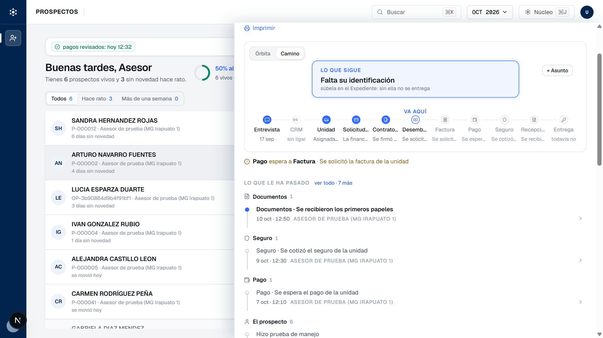
Órbita · CaminoEl CaminoCamino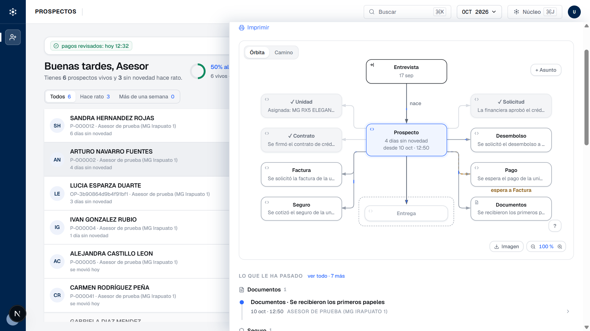
Órbita · CaminoProspecto al centroÓrbitaCómo hago · 2.3 Abrir la ficha y leerla · Paso 3 de 5
«Lo que sigue» dice qué toca hacer ahora con este prospecto
- Automático: Un título y una frase que la app arma sola: primero la entrevista, luego la identificación y luego el asunto abierto.
- Qué pasa después: Tocarlo te lleva a donde se resuelve: aquí, a «Identificaciones» del Expediente; con un asunto abierto, a su panel.
- Ojo: Sin identificación no se entrega: por eso «Falta su identificación» va por delante de cualquier asunto abierto.
 Lo que sigueLo que sigue
Lo que sigueLo que sigue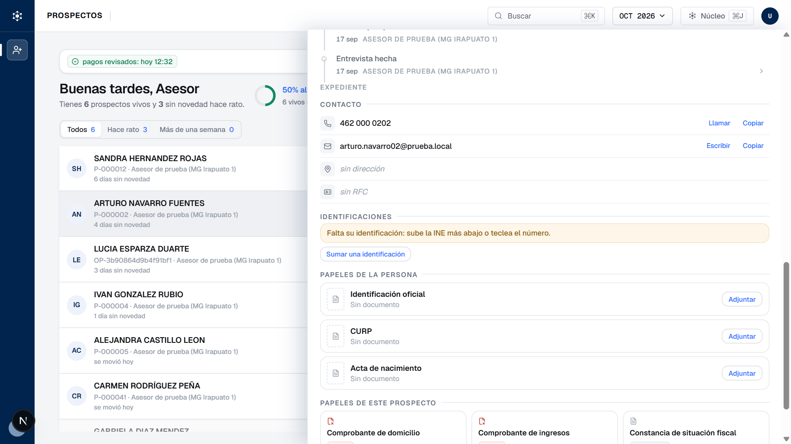
IdentificacionesAl tocarloCómo hago · 2.3 Abrir la ficha y leerla · Paso 4 de 5
«Lo que le ha pasado» va por asunto; «ver todo» abre el resto
- Fíjate en: «Lo que le ha pasado» es la historia del prospecto: un bloque por asunto, más uno de «El prospecto». Cada renglón dice qué pasó, cuándo y quién lo registró; el punto azul marca lo último que le pasó.
- Qué pasa después: Al principio salen los tres renglones más recientes de los asuntos y todo lo de «El prospecto»; «ver todo» abre el resto y «ver menos» lo recoge.
- Ojo: Un renglón con › se puede tocar: te lleva al panel de su asunto.
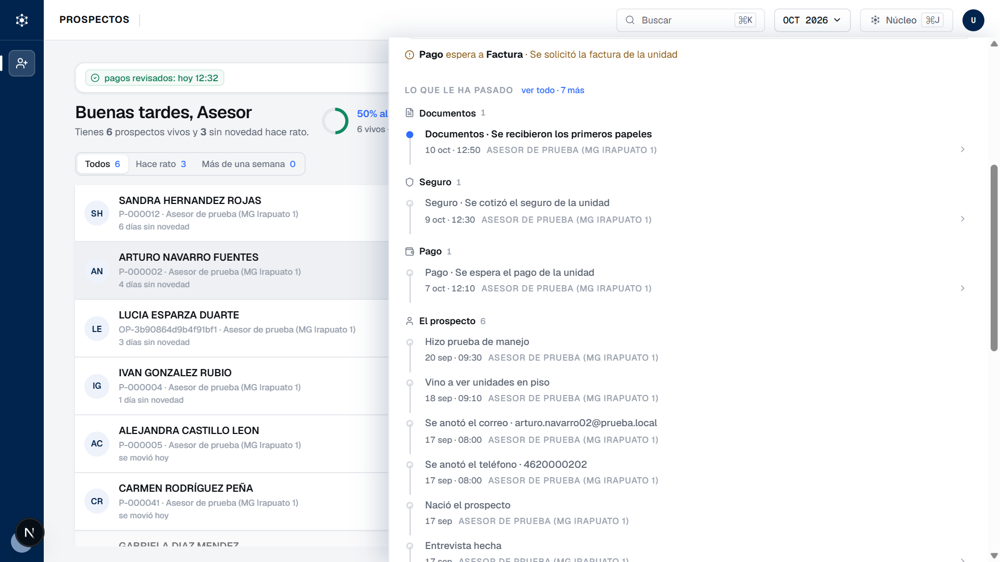
ver todoUn bloque por asuntoAntes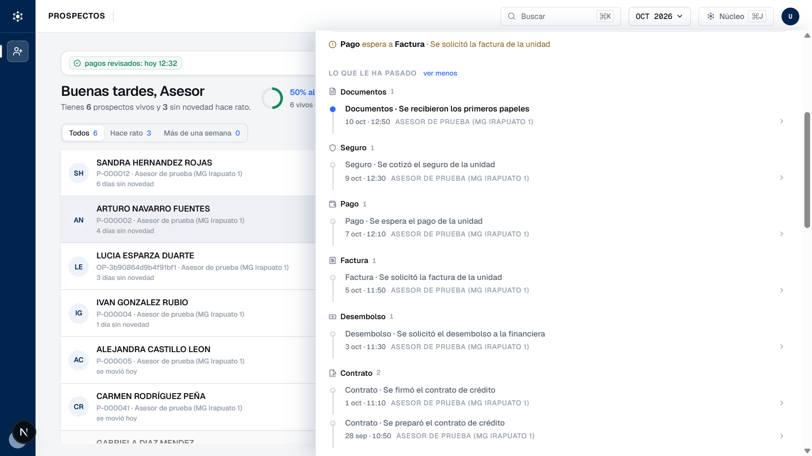
ver menosLo que estaba ocultoDespuésCómo hago · 2.3 Abrir la ficha y leerla · Paso 5 de 5
«Pantalla completa» y el chip bajo el nombre
- Fíjate en: Junto a la ✕, el botón de las flechas. Bajo el nombre, el chip: «Falta su identificación» en ámbar o, si ya la tiene, su tipo y número (con «+N» si hay más).
- Qué pasa después: La ficha ocupa todo el ancho, sin la lista detrás, y el botón pasa a «Volver al cajón». Tocar el chip baja a «Identificaciones» del Expediente.
- Ojo: En el teléfono el botón no sale: la ficha ya ocupa casi todo el ancho.
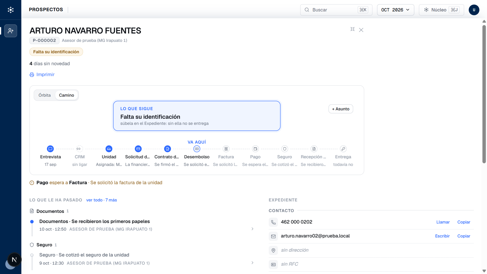
Volver al cajónPantalla completaCómo hago · 2.4
Anotar, terminar y reabrir un asunto
- Cada asunto del prospecto lleva su propia historia: ahí se anota lo que va pasando.
- Se anota después de cada llamada, cita o trámite. Cuando el asunto queda resuelto, se termina; si hay que volver a él, se reabre.
- Cuatro pasos: anotar dónde va · frases con «/» · mantén para terminar · reabrir
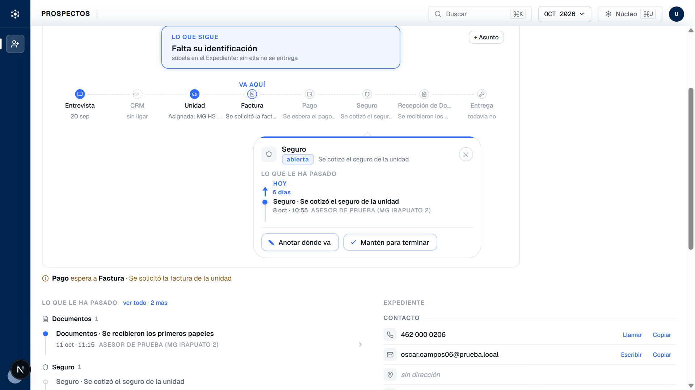
Cómo hago · 2.4 Anotar lo que pasa · Paso 1 de 4
Toca «Anotar dónde va», escribe una línea y toca «Anotar»
- Antes de empezar: Abre la ficha del prospecto y toca el asunto (2.3). Su panel trae la historia y los botones.
- Qué pasa después: La nota entra a «Lo que le ha pasado», con fecha, hora y quién la anotó. También pasa a ser lo último que dice el asunto: bajo su nombre y en el Camino.
- Ojo: Si el asunto aún no estaba abierto y tu rol puede abrirlo, la primera nota lo abre. Recepción de Documentos no se anota a mano: ahí se adjuntan los papeles.
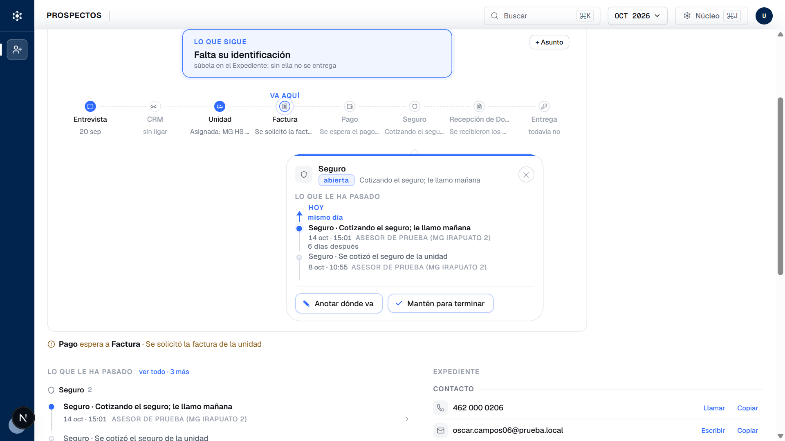
Tu notaLo último del asuntoDespuésCómo hago · 2.4 Anotar lo que pasa · Paso 2 de 4
Con el campo abierto, escribe «/» y elige una frase hecha
- Fíjate en: La lista ofrece «/llame», «/cita» y «/docs», cada una con su frase. Si sigues escribiendo, quedan solo las que empiezan igual.
- Qué pasa después: Elige con las flechas y Enter, o tocando la frase: se escribe sola en el campo. Puedes completarla antes de tocar «Anotar».
- Ojo: Esc cierra la lista sin borrar nada. Las frases sirven también al terminar un asunto; el campo aguanta 300 letras.
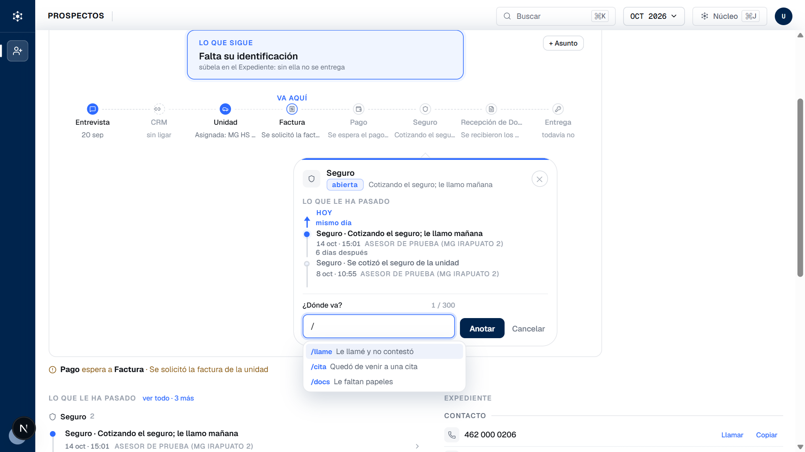
Campo y frasesAntes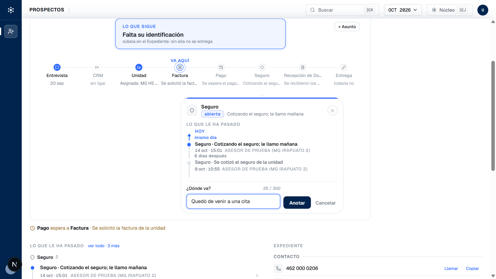
Frase puestaAnotarDespuésCómo hago · 2.4 Anotar lo que pasa · Paso 3 de 4
Sostén «Mantén para terminar» un segundo y cuenta cómo terminó
- Fíjate en: Mientras lo sostienes, una barra se llena bajo el botón. Si lo sueltas antes de que se llene, no pasa nada.
- Qué pasa después: Se abre la ventana «¿Cómo terminó?»: escribe el resultado y toca «Terminó». El asunto queda cerrado y tu frase entra a la historia.
- Ojo: Unidad y Recepción de Documentos no traen este botón: la primera se cierra al asignar la unidad; la segunda, con sus papeles. En Entrega, la ventana ya trae «Entregada».
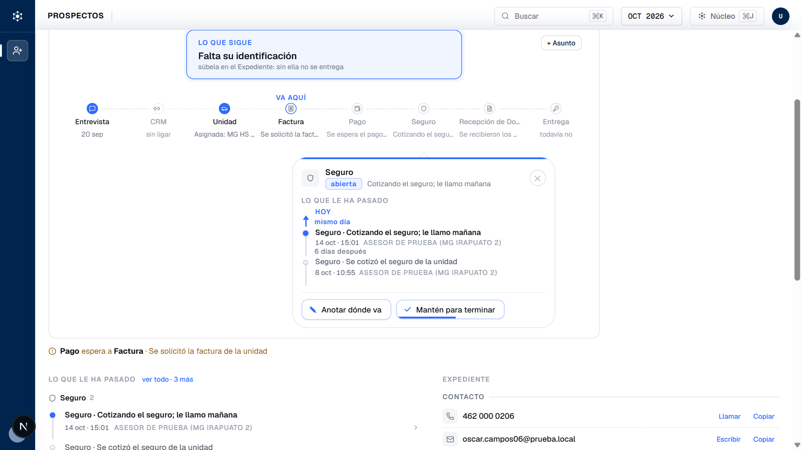
Mantén para terminarSosteniendo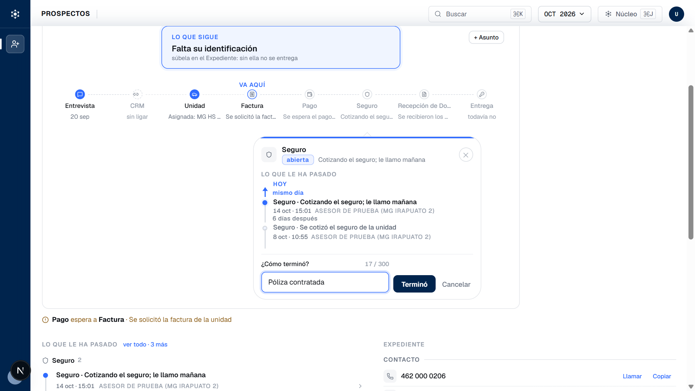
¿Cómo terminó?TerminóDespuésCómo hago · 2.4 Anotar lo que pasa · Paso 4 de 4
Para reabrir un asunto cerrado, anota algo en él
- Fíjate en: El asunto cerrado lleva la marca «CERRADA» junto a «Anotar dónde va». Ya no trae «Mantén para terminar».
- Qué pasa después: Al anotar, el asunto vuelve a «abierta» y reaparece «Mantén para terminar». El cierre y las notas de antes se quedan en la historia.
- Ojo: Reabrir pide el mismo permiso que anotar en ese asunto. Quien solo puede mirar no ve estos botones.
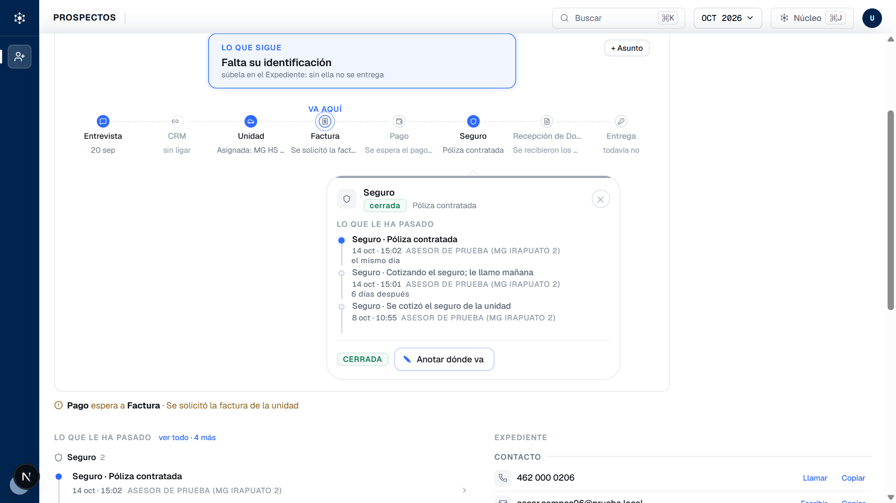
Asunto cerradoAnotar dónde vaAntes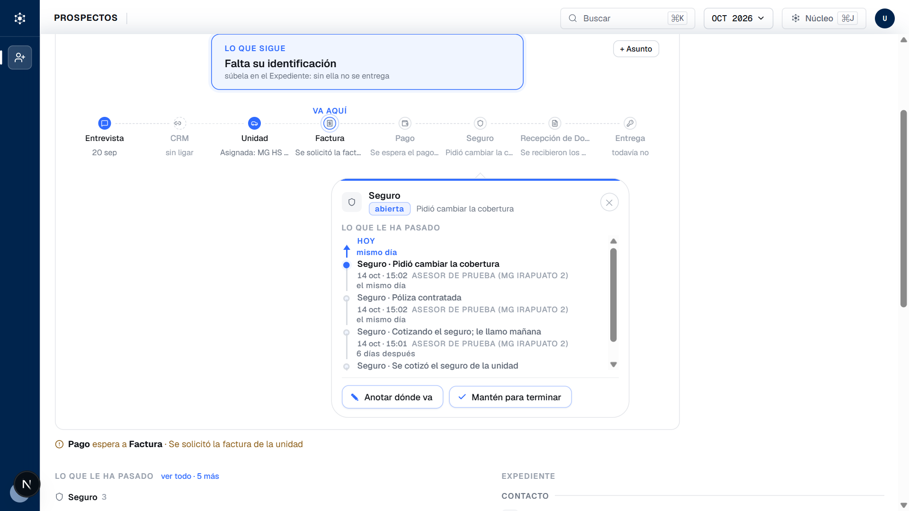
Asunto abiertoTu notaMantén para terminarDespuésCómo hago · 2.5
Abrir un asunto a un prospecto
- Un asunto es cada tema que llevas de un prospecto: la unidad, el crédito, el seguro, la entrega.
- Cuando le toca uno nuevo, lo abres con «+ Asunto»: la app solo te ofrece los que faltan y que tu rol puede abrir.
- Son dos pasos: abrir uno con «+ Asunto» y saber cuáles nacen solos o se mueven solos.
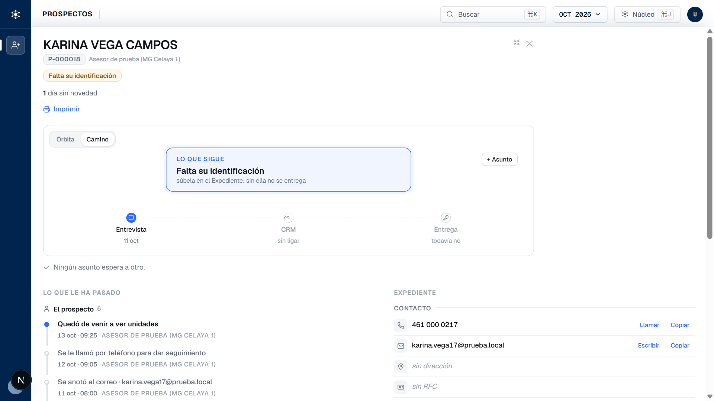
Cómo hago · 2.5 Abrir un asunto · Paso 1 de 2
Toca «+ Asunto», elige uno de la lista y anota su primer toque
- Fíjate en: La lista trae solo los asuntos que el prospecto todavía no tiene y que tu rol puede abrir.
- Qué pasa después: Al elegir uno se abre su panel, todavía «sin abrir». Queda abierto cuando anotas su primer toque en «¿Dónde va?» y tocas «Anotar».
- Ojo: Si no ves «+ Asunto», ya no queda ninguno que tu rol pueda abrir. En Camino y en Órbita está arriba a la derecha.
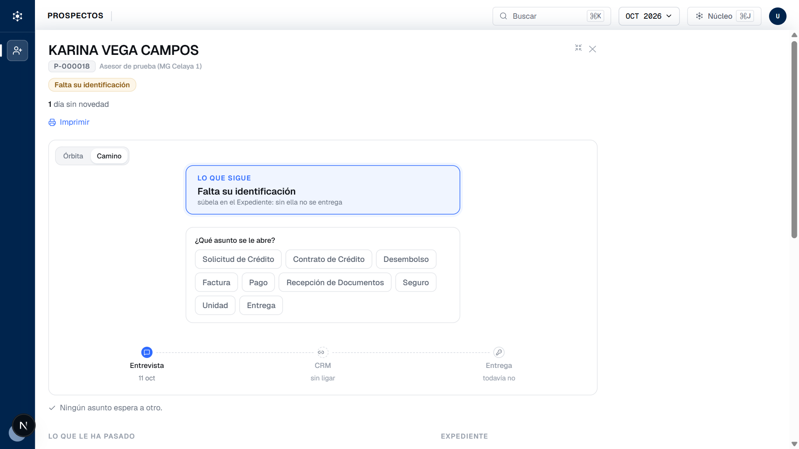
Los que faltanLa lista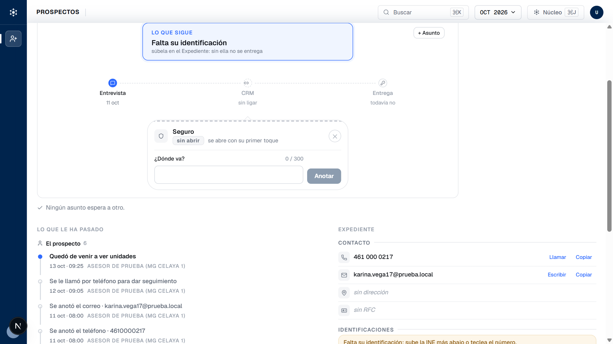
Sin abrir¿Dónde va?AnotarAl elegir unoCómo hago · 2.5 Abrir un asunto · Paso 2 de 2
Unos asuntos nacen solos y otros se mueven solos
- Fíjate en: La Entrevista no sale: ya existe desde el alta. La Encuesta de satisfacción y la 1ª cita de servicio tampoco: nacen solas al cerrarse la Entrega.
- Automático: Factura y Pago también salen, pero se mueven solos. Con la unidad asignada, la app los lee de finanzas y los cierra cuando cuadran.
- Ojo: Recepción de Documentos sí sale, pero no se anota a mano: se abre con su primer papel y se cierra sola cuando llegan los necesarios.
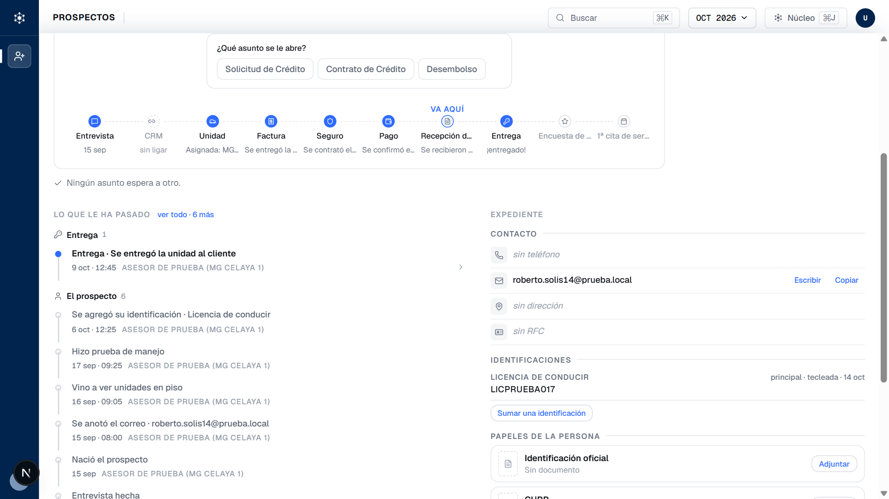
Lo que faltaNacieron solasYa entregado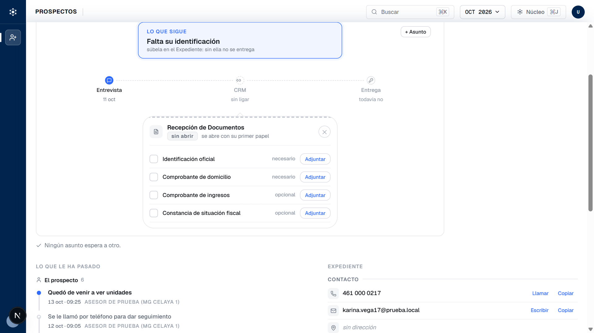
Con su primer papelLos papelesRecepciónCómo hago · 2.6
Asignar la unidad a un prospecto
- La unidad es el auto que el prospecto va a comprar: se elige del inventario y queda ligada a su ficha.
- Se hace en cuanto se sabe cuál es. Con ella la app encuentra la factura; sin ella, Factura y Entrega avisan «La unidad todavía no está asignada».
- Cuatro pasos: abrir Unidad · el catálogo visual · buscar por VIN · cambiar la unidad
- Ten a la mano: el modelo que quiere o el VIN de la unidad; bastan sus últimos 6.
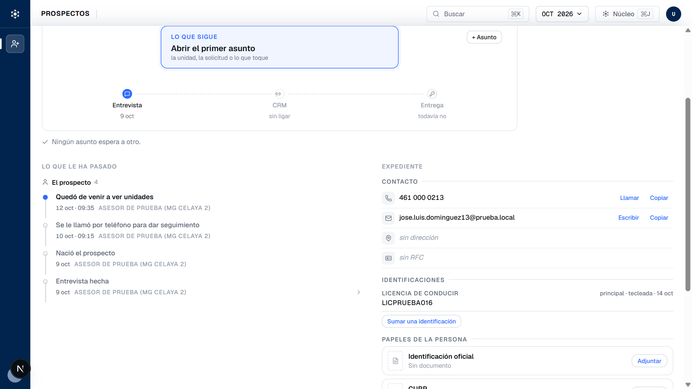
Cómo hago · 2.6 Asignar la unidad · Paso 1 de 4
Toca «+ Asunto» y elige «Unidad»
- Fíjate en: «+ Asunto» está arriba a la derecha del Camino. Con identificación y sin ningún asunto, «Lo que sigue» dice «Abrir el primer asunto» y abre el mismo menú; si falta la identificación, pide esa primero.
- Qué pasa después: Se abre el panel de Unidad, «sin abrir»: «Anotar dónde va» deja una nota y «Asignar unidad» abre el catálogo del inventario.
- Ojo: Si el prospecto ya tiene el asunto Unidad, no sale en el menú: se toca su asunto en el Camino.
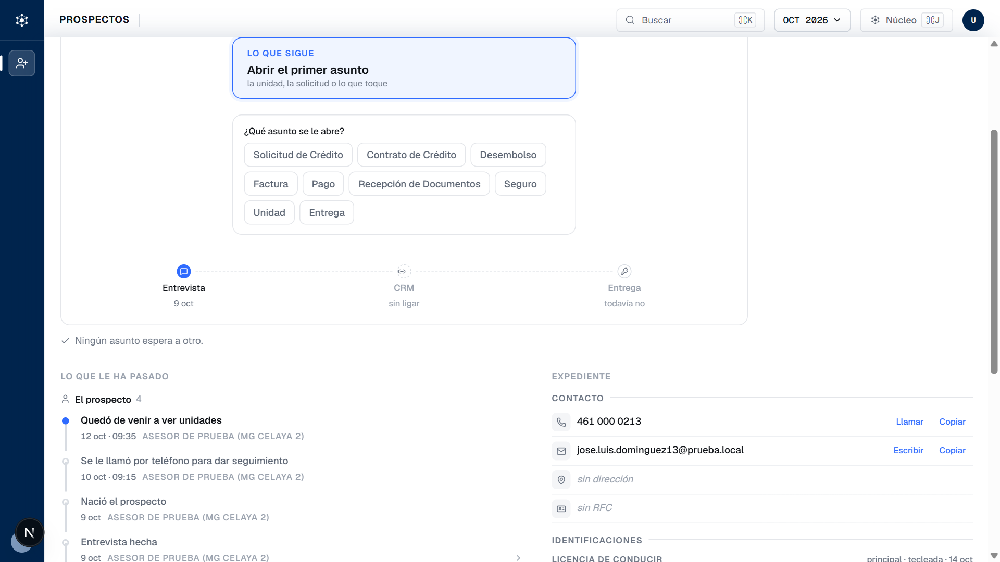
UnidadAntes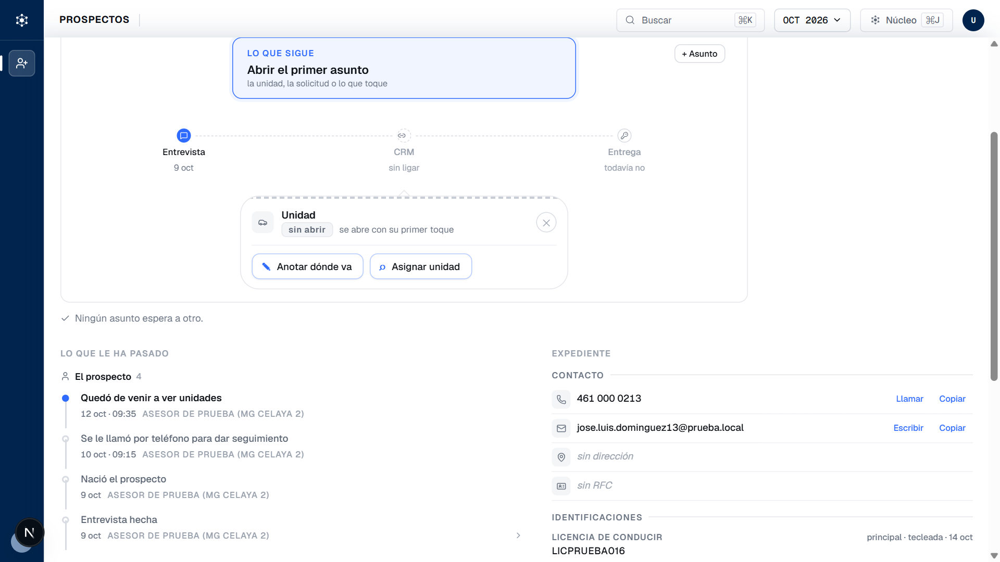
Asignar unidadDespuésCómo hago · 2.6 Asignar la unidad · Paso 2 de 4
Toca «Asignar unidad»: el catálogo abre en el modelo que pidió
- Fíjate en: Abre en el modelo que dijo en la entrevista, con filtros de color y versión. «Todos» lleva a la lista de modelos, con una estrella ★ en el que pidió.
- Qué pasa después: Al tocar una tarjeta, abajo sale «La unidad elegida» con sus datos y el botón «Asignar esta unidad».
- Ojo: «N aquí · M en otras» separa tus sucursales de las demás; una unidad de otra sucursal también se puede asignar.
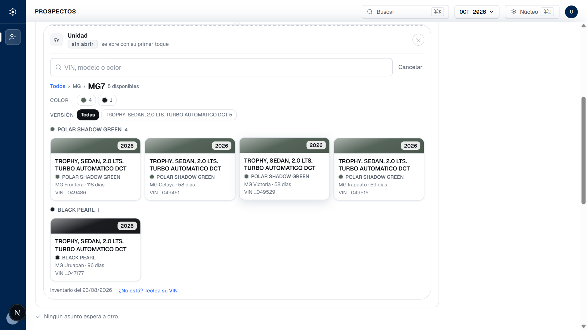
Modelo, color y versiónUna unidadSu modelo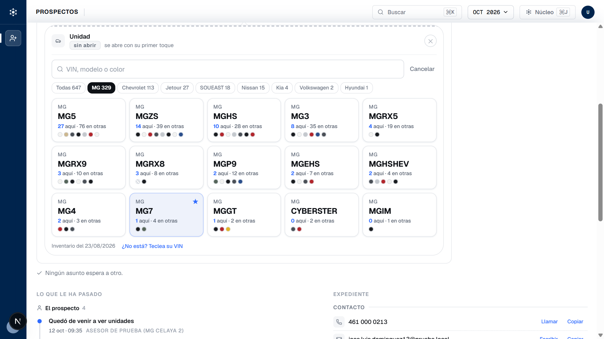
MarcasLo que buscaLa lista de modelosCómo hago · 2.6 Asignar la unidad · Paso 3 de 4
Teclea el VIN (o los últimos 6) y toca «Asignar esta unidad»
- Fíjate en: El buscador acepta el VIN, sus últimos 6 dígitos, el modelo o el color. Al tocar la tarjeta, «La unidad elegida» muestra el VIN completo.
- Qué pasa después: «Asignar esta unidad» la deja en la ficha, anota «Asignada: … · VIN …» en la historia y el asunto Unidad queda cerrado.
- Ojo: Si el VIN completo no está en el inventario, la app pide confirmarlo («Revisa que sea el de la unidad que tienes enfrente»): «Es correcto, asignar» o «Corregir».
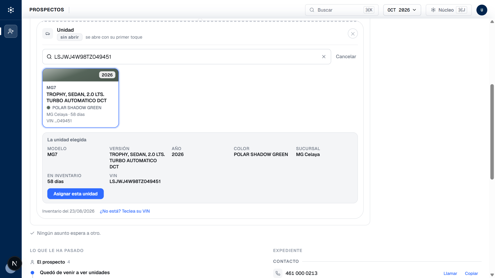
BuscadorAsignarAntes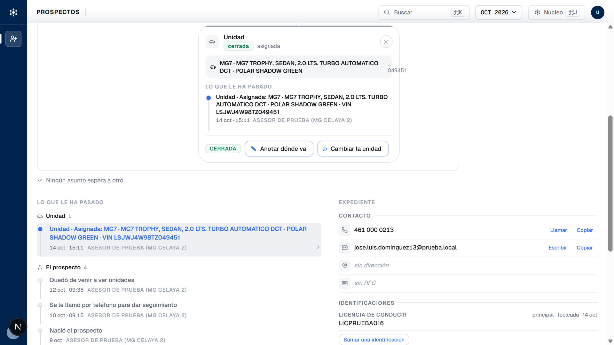
Cerrada, con su unidadQueda en la historiaDespuésCómo hago · 2.6 Asignar la unidad · Paso 4 de 4
Toca «Cambiar la unidad», elige otra y toca «Asignar esta unidad»
- Fíjate en: Con la unidad asignada, el botón ya no dice «Asignar unidad» sino «Cambiar la unidad»; arriba quedan la unidad actual y su historia.
- Qué pasa después: Se elige otra en el mismo catálogo: la ficha queda con la nueva y la historia anota «(antes …)» con el VIN anterior.
- Ojo: El asunto Unidad sigue cerrado: cambiar la unidad no lo reabre.
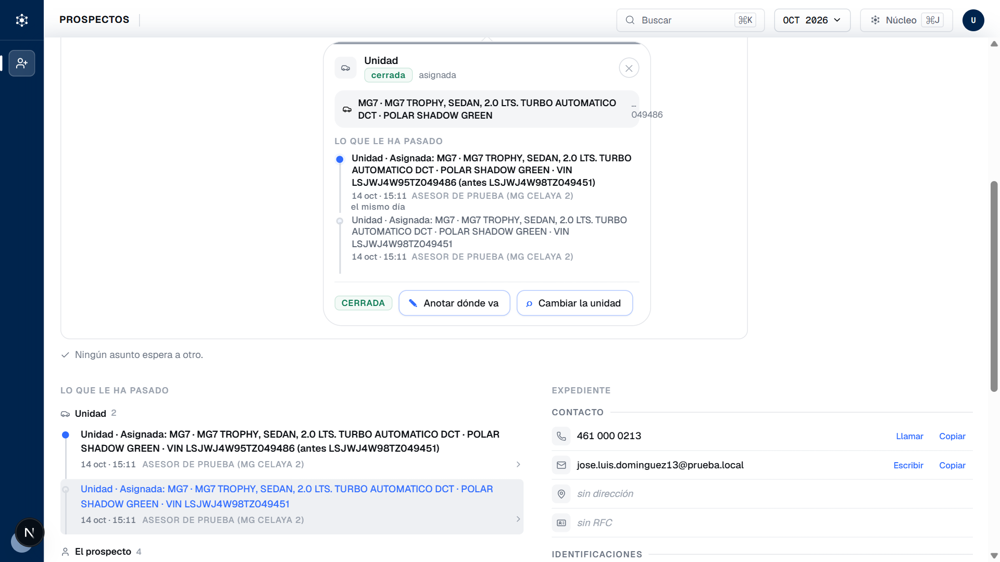
La unidad nuevaLa anterior, anotadaDespuésCómo hago · 2.7
Completar el Expediente de un prospecto
- El Expediente guarda lo que se sabe de la persona: su contacto, sus identificaciones y sus papeles, más los papeles de este prospecto.
- Se completa en la ficha durante la venta; sin una identificación, la Entrega no se cierra.
- Siete pasos: abrirlo y el contacto · sumar una identificación · elegir cuál adjuntar · las dos fotos de la INE · lo que leyó el lector · la identificación ya guardada · papeles de este prospecto.
- Ten a la mano: su identificación (de la INE, foto del frente y del reverso, derechas) y los papeles de la visita: comprobante de domicilio, de ingresos y constancia de situación fiscal, en foto o PDF de hasta 10 MB.
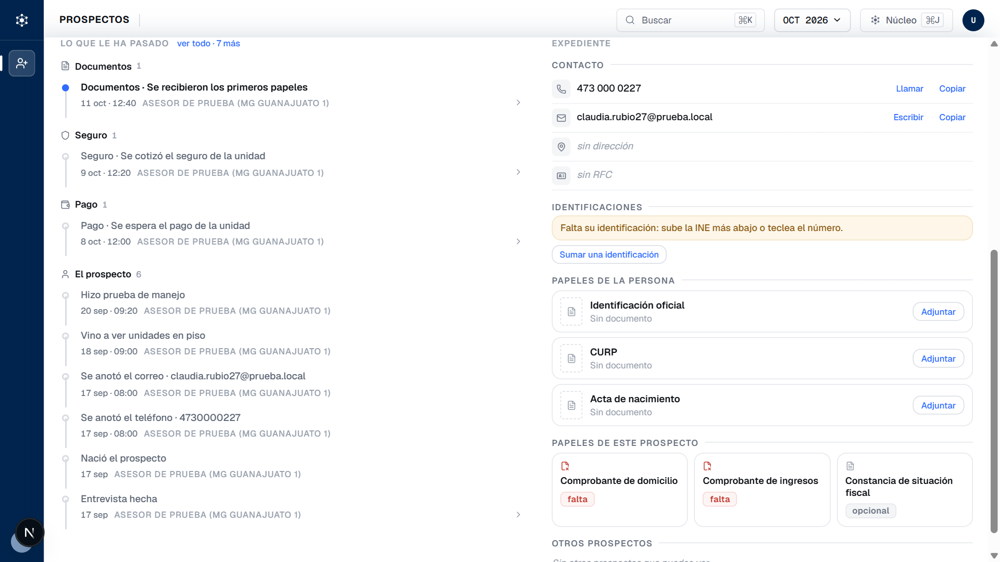
Cómo hago · 2.7 El Expediente · Paso 1 de 7
Abre la ficha, baja al Expediente y toca un dato del contacto
- Fíjate en: Teléfono y correo traen «Llamar» o «Escribir» y «Copiar»; dirección y RFC, solo «Copiar». Lo que falta dice «sin dirección» o «sin RFC».
- Qué pasa después: Al tocar un dato se abre su campo y una línea dice «Formato válido» (o, en rojo, qué regla falla). «Corregir» lo guarda y la historia lo anota, como «Se anotó el RFC».
- Ojo: El contacto es de la persona: lo que corrijas sirve a todos sus prospectos. Sin permiso para editar el prospecto, los datos se ven pero no se tocan.
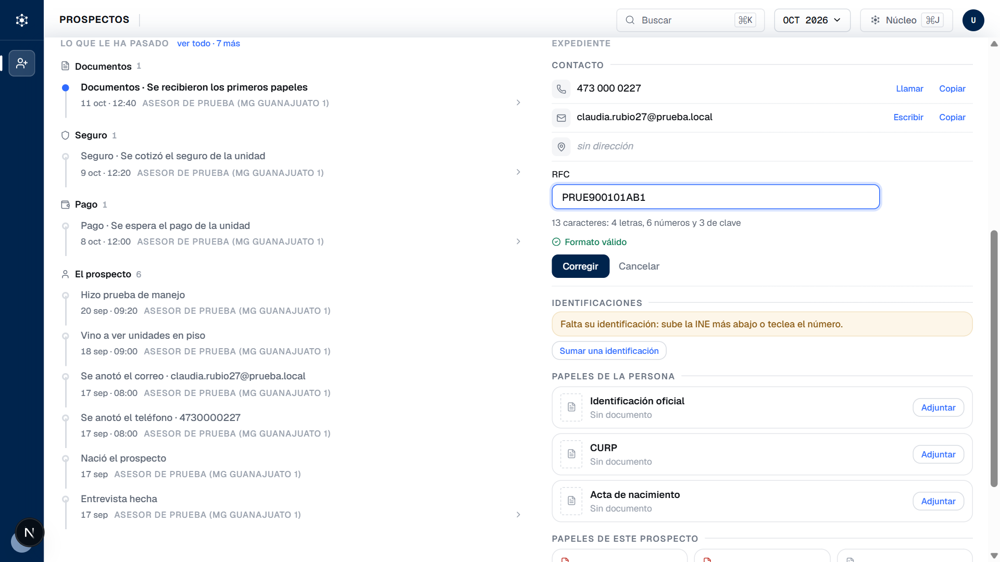
Corregir el datoDespuésCómo hago · 2.7 El Expediente · Paso 2 de 7
Toca «Sumar una identificación», elige cuál es y teclea su número
- Fíjate en: Sin ninguna identificación, un aviso ámbar dice «Falta su identificación». Los tipos son INE (clave de elector), CURP, pasaporte, licencia de conducir, cédula profesional y «Otra», que pide escribir cuál es.
- Qué pasa después: «Sumar» la guarda: queda en la lista, el chip bajo el nombre la muestra y la historia dice «Se agregó su identificación». «Lo que sigue» ya no la pide.
- Ojo: Si esa identificación ya es de otra persona, la app no la guarda y te pide avisar a tu gerente. La primera de la lista es la principal; el chip muestra esa y las demás como «+N».
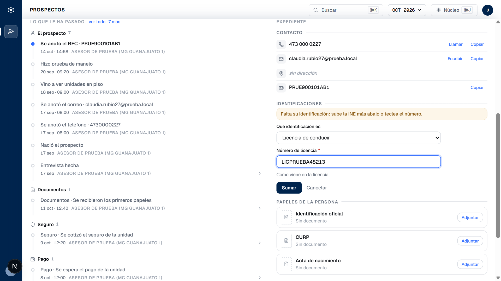
Tipo y númeroAntes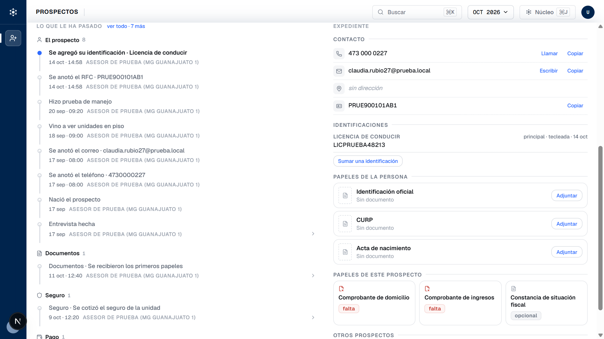
La nueva identificaciónDespuésCómo hago · 2.7 El Expediente · Paso 3 de 7
Papeles de la persona: toca «Adjuntar» en la identificación y elige cuál es
- Fíjate en: Cada papel dice «Sin documento» hasta que se sube; ya subido, dice «Subido el…» y su botón pasa a «Cambiar». No caducan: lo que subas sirve a todos los prospectos de esa persona.
- Qué pasa después: «Adjuntar» sube una foto o un PDF de hasta 10 MB. En la identificación primero pregunta cuál es: INE, pasaporte, licencia u otra; con la INE sigue el paso 4.
- Ojo: La INE se lee sola (CURP, número y vigencia); el pasaporte y la licencia se adjuntan tal cual, sin lectura.
 Tres papeles de la personaAntes
Tres papeles de la personaAntes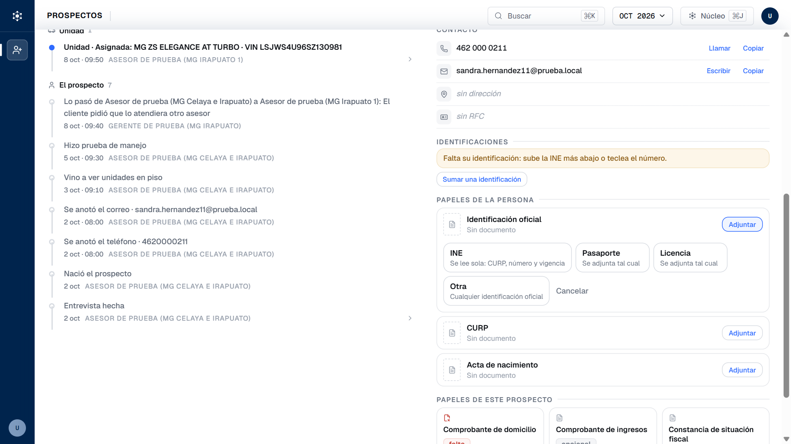
¿Cuál es?DespuésCómo hago · 2.7 El Expediente · Paso 4 de 7
Elige INE, pon el frente y el reverso y toca «Guardar»
- Fíjate en: Son dos fotos, cada una con su cuadro: al ponerla, dice «Frente ✓» o «Reverso ✓». «Guardar» se activa cuando están las dos.
- Qué pasa después: «Guardar» sube las dos fotos y el lector las lee: el botón dice «Guardando…» y arriba aparece la barra «Leyendo la credencial…». Espera a que termine.
- Ojo: Toma las dos fotos con la credencial derecha, como se lee: de lado o de cabeza, el lector no la entiende.
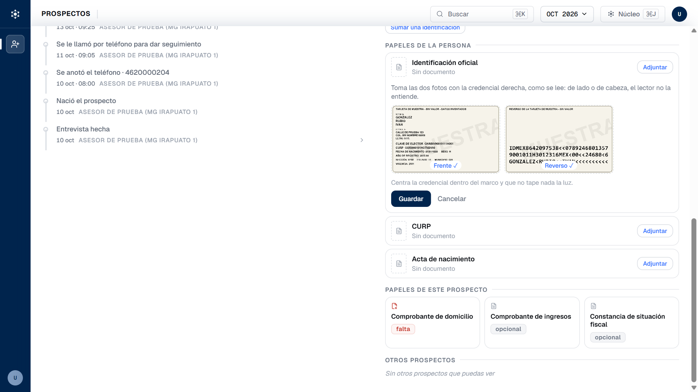
Frente y reversoGuardarAntes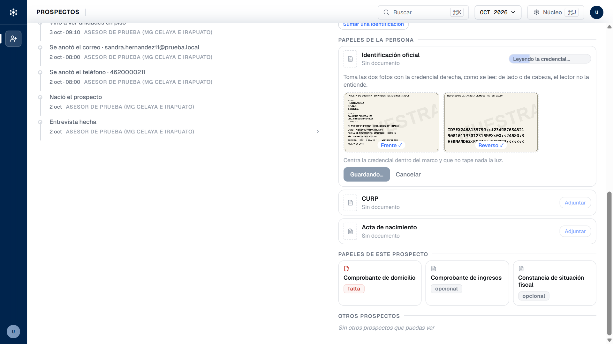
LeyendoDespuésCómo hago · 2.7 El Expediente · Paso 5 de 7
Revisa lo que leyó el lector y confirma lo dudoso con «Es correcto»
- Fíjate en: Lo que el lector comprobó lleva ✓ y «leído por el lector: cuadra». Lo que dudó lleva «?», un dibujo de la credencial con su zona marcada y el valor leído en un campo.
- Qué pasa después: Compara con la credencial y toca «Es correcto»; si el valor está mal, corrígelo en el campo y toca «Guardar». El dato queda «confirmado por el asesor».
- Ojo: Bajo la lectura, un aviso compara el nombre de la credencial con el registrado: verde si coincide y rojo si no; en ese caso, revisa que sea la misma persona.
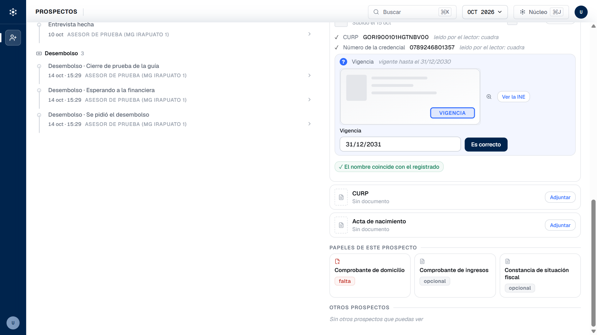
ComprobadoDudosoEs correctoAntesCómo hago · 2.7 El Expediente · Paso 6 de 7
Mira «Identificaciones»: la INE ya quedó guardada
- Fíjate en: La clave de elector (INE, principal) y la CURP quedan en la lista como «leída», con la fecha. El aviso ámbar «Falta su identificación» ya no sale.
- Qué pasa después: El chip bajo el nombre muestra la INE y la historia dice «Expediente · se adjuntó identificación oficial (INE, frente y reverso)». «Cambiar» sube otra: la anterior se conserva.
- Ojo: Si el lector no responde, la INE se guarda igual y el asesor confirma los datos a mano.
Cómo hago · 2.7 El Expediente · Paso 7 de 7
Papeles de este prospecto: toca un papel para ir a Recepción de Documentos
- Fíjate en: Son los papeles de esta visita: comprobante de domicilio, comprobante de ingresos y constancia de situación fiscal. Cada papel dice «falta» (rojo), «opcional» (gris) o «recibido el…» (verde).
- Qué pasa después: Tocar un papel abre el asunto Recepción de Documentos, donde cada papel tiene su «Adjuntar». Al recibirse el papel, el papel se pone verde y dice «recibido el…».
- Ojo: Aquí los papeles de este prospecto solo se ven: se adjuntan en Recepción de Documentos. Si el prospecto no tiene ese asunto, los papeles no se tocan: ábrelo con «+ Asunto» (2.5) y adjunta ahí el primer papel.
Cómo hago · 2.8
Ligar el lead de SaleU
- Liga al prospecto con el lead que la persona ya tiene en SaleU, para que lo que pase allá se vea en su historia.
- Se hace al dar de alta al prospecto, si la app encuentra su lead por teléfono o correo, o después desde su ficha.
- Tres pasos: dónde aparece el lead · elegir al candidato · lo que aparece en la historia.
- Ten a la mano: su teléfono o su correo, completos.
Cómo hago · 2.8 Ligar el lead de SaleU · Paso 1 de 3
Escribe el teléfono o el correo: si la persona está en SaleU, su lead aparece
- Fíjate en: En el alta, el lead aparece bajo Contacto en cuanto escribes un teléfono completo o un correo. En la ficha, toca «CRM · sin ligar» en el Camino para verlo.
- Qué pasa después: Cada candidato dice por qué cuadró («mismo teléfono», «mismo correo») y trae modelo, sucursal y fecha de SaleU. Con uno solo sale ya marcado; con varios, tú eliges.
- Ojo: Sin candidatos, el prospecto nace sin lead y se liga después desde su ficha. «CRM · sin ligar» sale solo mientras no hay lead.
Cómo hago · 2.8 Ligar el lead de SaleU · Paso 2 de 3
Marca al candidato que es la persona y toca «Ligar con este lead»
- Fíjate en: Con varios candidatos, tú eliges: en la ficha, el botón espera a que marques uno. «Ninguno es esta persona» sirve si ninguno cuadra.
- Qué pasa después: «Ligar con este lead» quita «CRM · sin ligar» del Camino y anota la liga en la historia. Ese lead ya no se ofrece a otro prospecto.
- Ojo: Ligar no se deshace: revisa que sea la misma persona. En el alta, si enciendes «Ligar con este lead» sin marcar a nadie, toma al primero: marca tú al correcto.
Cómo hago · 2.8 Ligar el lead de SaleU · Paso 3 de 3
En «Lo que le ha pasado» queda «Ligado al lead… de SaleU», con quién y cuándo
- Fíjate en: El renglón nuevo queda arriba, con la firma de quien ligó y la hora.
- Automático: Si SaleU tiene actividades de ese lead (cita, prueba de manejo, crédito, venta), al abrir la ficha la app las suma aquí con la firma CRM y la hora de SaleU.
- Ojo: Esas actividades solo se ven: no abren ni cierran ningún asunto. En esta captura el lead no trae ninguna, por eso solo sale «Ligado».
Cómo hago · 2.9
Pasar un prospecto a otro asesor
- Cuando un prospecto debe llevarlo otro asesor, el gerente de la sucursal lo pasa desde su ficha.
- Solo lo pasa el gerente (y Admin), a un asesor de la sucursal donde nació el prospecto. El asesor anterior deja de verlo.
- Dos pasos: dónde está «cambiar» · elegir al asesor y confirmar.
- Ten a la mano: a qué asesor de la sucursal se lo pasas y por qué.
Cómo hago · 2.9 Pasar a otro asesor · Paso 1 de 2
Abre la ficha del prospecto y toca «cambiar», junto a quien lo lleva
- Fíjate en: Bajo el nombre van el folio, el asesor que lo lleva hoy y, pegado a él, «cambiar».
- Qué pasa después: Se abre la ventana «Pasar a otro asesor». Si la cierras sin confirmar, el prospecto sigue igual.
- Ojo: «cambiar» solo sale para el gerente (y Admin); un asesor no lo ve.
Cómo hago · 2.9 Pasar a otro asesor · Paso 2 de 2
Elige al asesor, anota el motivo si quieres y toca «Pasar a…»
- Fíjate en: En «Asesor» salen solo los asesores de esa sucursal, sin quien ya lo lleva. El botón dice a quién se lo pasas.
- Qué pasa después: La ficha muestra al asesor nuevo. La historia guarda «Lo pasó de… a…», con quién lo pasó y el motivo, si lo escribiste.
- Ojo: El asesor anterior deja de verlo en su lista. Lo que anotó se queda en la historia, con su firma.
Cómo hago · 2.10
Entregar la unidad a un prospecto
- Entrega es la salida del prospecto. Al cerrarla sale de los vivos y nacen la Encuesta de satisfacción y la 1ª cita de servicio.
- Se cierra cuando la persona ya recibió su unidad. Sin identificación no se puede cerrar; sin unidad asignada, solo avisa.
- Tres pasos: lo que Entrega exige · abrirla y cerrarla · lo que pasa al cerrarla.
- Ten a la mano: su identificación ya en el Expediente (2.7) y su unidad asignada (2.6).
Cómo hago · 2.10 Entregar · Paso 1 de 3
Entrega pide la identificación y avisa si falta la unidad
- Fíjate en: Sin identificación, el chip bajo el nombre y «Lo que sigue» la piden. La unidad ya aparece asignada en el Camino.
- Qué pasa después: Al sumarla en el Expediente (2.7), el chip la enseña y la historia la anota. «Lo que sigue» pasa al asunto que siga abierto.
- Ojo: Sin identificación no se puede cerrar Entrega. Sin unidad asignada, su panel solo avisa: «La unidad todavía no está asignada».
Cómo hago · 2.10 Entregar · Paso 2 de 3
Toca Entrega, anota su primer toque y ciérrala con «Mantén para terminar»
- Fíjate en: Entrega empieza «sin abrir»: la abre lo que anotas en «¿Dónde va?».
- Qué pasa después: Tras anotar, Entrega queda «abierta» y sale «Mantén para terminar»: se sostiene un segundo (2.4). La ventana pregunta «¿Cómo terminó?» con «Entregada» ya escrito, y «Terminó» la cierra.
- Ojo: Los demás asuntos abiertos no frenan la Entrega: quedan abiertos y «Lo que sigue» los señala. Ciérrala cuando la persona ya recibió su unidad.
Cómo hago · 2.10 Entregar · Paso 3 de 3
Al cerrarla, sale de los vivos y nacen la Encuesta y la 1ª cita de servicio
- Automático: En la ficha, Entrega queda en «¡entregado!» y aparecen solos dos asuntos nuevos: Encuesta de satisfacción y 1ª cita de servicio.
- Qué pasa después: En la lista baja al final, atenuado y con su sello «entregado», mientras le quede un asunto abierto. El saludo solo cuenta a los vivos.
Cómo hago · 2.11
Abrir un asunto y anotar desde el tablero
- El tablero acomoda a los prospectos vivos por asunto: cada columna es un asunto y cada tarjeta, un prospecto.
- Sirve para ver de un vistazo en qué va cada uno, abrirle un asunto o dejarle una nota sin entrar a su ficha.
- Tres pasos: las columnas por asunto · arrastrar una tarjeta para abrirle otro asunto · el lápiz para anotar.
- Ten a la mano: una computadora con ratón para arrastrar; con el dedo, el asunto se abre desde la ficha (2.5).
Cómo hago · 2.11 El tablero · Paso 1 de 3
Cada columna es un asunto y cada tarjeta, un prospecto
- Fíjate en: «Sin asunto abierto» va primero: ahí están los prospectos que no tienen ningún asunto abierto. El número de cada columna dice cuántos hay.
- Automático: Las tarjetas se acomodan solas: aparecen en la columna de un asunto cuando se abre y salen cuando se cierra.
- Ojo: Un prospecto con varios asuntos abiertos sale en varias columnas. Las columnas sin prospectos van al final: desliza a la derecha para verlas.
Cómo hago · 2.11 El tablero · Paso 2 de 3
Arrastra una tarjeta a otro asunto, suéltala y escribe qué pasó
- Fíjate en: Mientras arrastras, las columnas donde se puede soltar dicen «suelta aquí para abrir…» y la que tienes debajo se resalta. Si una no lo dice, ese asunto ya está abierto o tu rol no puede abrirlo.
- Qué pasa después: Al soltarla, una ventana pide una línea obligatoria: qué pasó con ese asunto. Con «Abrir», el asunto queda abierto, la línea queda en su historia y la tarjeta aparece en esa columna.
- Ojo: Solo se arrastra con el ratón; con el dedo, el asunto se abre desde la ficha con «+ Asunto» (2.5). Esc cancela el arrastre.
Cómo hago · 2.11 El tablero · Paso 3 de 3
Toca el lápiz de una tarjeta para anotar sin abrir la ficha
- Fíjate en: El lápiz sale al pasar el ratón por la tarjeta (con el dedo se ve siempre). En «Sin asunto abierto» no hay lápiz: no hay un asunto donde anotar.
- Qué pasa después: Se abre una ventana «Anotar en…»: escribes dónde va el prospecto y tocas «Anotar». La línea queda en la historia de ese asunto y la tarjeta la muestra debajo del nombre.
- Ojo: El lápiz solo sale si tu rol puede anotar en ese asunto.
Consulta
Cómo funciona
- Para resolver una duda: los once asuntos, las reglas, lo que la app trae sola, quién ve qué y lo que todavía no hace.
Consulta · 3.1
El mapa: once asuntos
- Cinco se mueven solos o nacen solos.
- Las flechas «espera a» avisan, no detienen.
Consulta · 3.1 El mapa
Unidad: el auto que quiere y el que se le asigna
- Quién la mueve: el asesor, del inventario o por VIN.
- Cómo se cierra: sola, al asignar.
- A qué espera: a nada.
Consulta · 3.1 El mapa
Recepción de Documentos: los papeles necesarios
- Quién la mueve: el asesor sube; la app decide.
- Cómo se cierra: sola, cuando están todos; se reabre si falta el de ingresos.
- A qué espera: a nada.
Consulta · 3.1 El mapa
Solicitud de Crédito: de la petición a la respuesta de la financiera
- Quién la mueve: F&I.
- Cómo se cierra: a mano, eligiendo aprobada o rechazada.
- A qué espera: a Documentos.
Consulta · 3.1 El mapa
Contrato de Crédito: la firma
- Quién la mueve: F&I.
- Cómo se cierra: a mano.
- A qué espera: a la Solicitud aprobada (decidido; hoy no se muestra).
Consulta · 3.1 El mapa
Desembolso: hasta que la financiera suelta el dinero
- Quién la mueve: F&I.
- Cómo se cierra: a mano.
- A qué espera: al Contrato cerrado.
Consulta · 3.1 El mapa
Pago: cuánto ha pagado
- Quién la mueve: finanzas; la app lo lee. El asesor solo anota.
- Cómo se cierra: sola, al 100 %.
- A qué espera: a Factura. El apartado antes de la factura no se ve: se anota.
Consulta · 3.1 El mapa
Factura: la venta registrada
- Quién la mueve: finanzas; la app lo lee.
- Cómo se cierra: sola; se reabre si la cancelan.
- A qué espera: a la Unidad asignada.
Consulta · 3.1 El mapa
Seguro: la póliza
- Quién la mueve: el asesor.
- Cómo se cierra: a mano; puede seguir después de entregar.
- A qué espera: a nada.
Consulta · 3.1 El mapa
Entrega: citar, revisar, firmar. La salida
- Quién la mueve: el asesor.
- Cómo se cierra: a mano; el prospecto sale de vivos.
- A qué espera: a la Unidad asignada y a la identificación en el Expediente.
Consulta · 3.1 El mapa
Encuesta de satisfacción: la llamada al cliente
- Quién la mueve: por definir (falta quién).
- Cómo se cierra: a mano.
- A qué espera: a nada; nace sola al entregar.
Consulta · 3.1 El mapa
1ª cita de servicio: el primer mantenimiento
- Quién la mueve: por definir (falta quién).
- Cómo se cierra: a mano.
- A qué espera: a nada; nace sola al entregar.
Consulta · 3.2
Cuatro reglas
Consulta · 3.3
Lo invisible: lo que la app trae sola
- Finanzas: Pago y Factura, cuatro veces al día y al abrir la ficha.
- El lector de la INE y el inventario del DMS.
- SaleU, a la historia; Seminuevos solo se ve.
Consulta · 3.4
Quién entra y qué ve
- Permisos por asunto: sin Unidad no se ve el inventario.
| Quién | Ve | Qué hace |
|---|---|---|
| Asesor de ventas | Los que lleva | Registrar, abrir y anotar en los asuntos |
| Gerente de ventas | Lo suyo y sus sucursales | Mirar y pasar a otro asesor |
| Jefe de piso · Administrador de ventas · Coordinador de entregas · Dirección | Sus sucursales | Solo mirar |
| Valuador de Seminuevos | Solo el buscador | Buscar al prospecto al capturar el avalúo |
| TI, quien administra | Todo | Todo |
Consulta · 3.5
Lo que todavía no hace
- El apartado antes de la factura no se ve: se anota.
- La lista aún no trae lo que busca el prospecto, el teléfono y el VIN para buscar, «ya vino antes» ni la fecha de entrega.